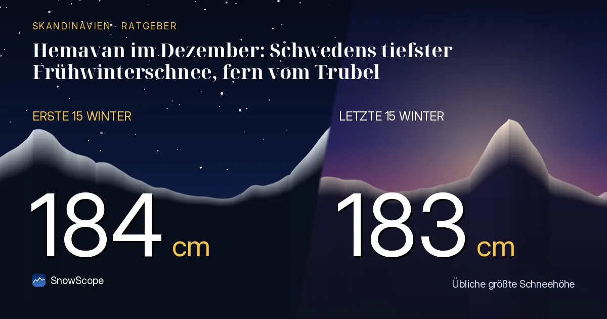

Hemavan im Dezember: Schwedens tiefster Frühwinterschnee, fern vom Trubel
Hemavan liegt in den schwedischen Bergen nahe der norwegischen Grenze und baut tieferen Dezemberschnee auf als jedes nordische Skigebiet, das wir verglichen haben. Am typischen 15. Dezember hält die Mittelhöhe (799 m) 82 cm, und in jedem einzelnen unserer 46 Winterjahre hatte diese Höhe in der Woche vor Weihnachten Schnee von 30 cm oder tiefer.
Die Live-Schneeprognose für Hemavan in der SnowScope-AppSchneehöhen, Pulverschnee-Alarme und 3D-Karte, gratis.
Warum Dezember hier die Alpen und andere nordische Gebiete schlägt
Hemavans Stärke ist Höhe kombiniert mit Breitenlage. Die Talstation liegt bei 462 m, die Mittelhöhe bei 799 m und der Gipfel bei 1136 m. Diese Höhenunterschiede fangen Schnee auf jeder Ebene ein, und weit im Norden von Schwedisch-Lappland ist Dezemberschnee zuverlässig. In der Mittelhöhe hatten 100 % unserer 46 Winter ab 8. Dezember 30 cm oder mehr. Am Gipfel war es jeder Winter in jeder einzelnen Dezemberwoche.
Vergleich das mit Åre, Schwedens größerem Skigebiet: Åres Mittelhöhe (853 m) hatte am typischen 15. Dezember nur 40 cm, und die Schneedecke Mitte Dezember war dort in 89 % der Winter sicher, nicht 100 %. Für Skifahrer, die von dünnen Dezembern anderswo genervt sind, bietet Hemavan Sicherheit.


Die Talstation ist das Risiko; Mittelhöhe und Gipfel sind sicher
Anfang Dezember in der Talstation (462 m) war nicht garantiert: 78 % der Winter hatten in der ersten Woche 30 cm oder mehr. Aber ab 8. Dezember sprang die Bedeckung auf 89 %, dann 91 % bis Weihnachtswoche. Wenn du vor 8. Dezember ankommst, bleib höher. Mittelhöhe und Gipfel hatten Bedeckung in jedem einzelnen Winter von Anfang Dezember durch den Monat.
In der Weihnachtswoche selbst verbessert sich das Tiefenbild überall. Die Talstation hatte typisch 62 cm am 24. Dezember; Mittelhöhe 93 cm; Gipfel 128 cm. In 96 % unserer Winter hatte die Mittelhöhe 60 cm oder mehr in Weihnachtswoche – echtes Pulverskigebiet.
Wasser gespeichert hoch, freigegeben durch den Frühling
Tiefer Dezemberschnee hier ist nicht nur zum Skifahren; er ist Wasser, das in den Bergen gespeichert ist. Diese Schneedecke hält normalerweise bis in den Frühling, weil der tiefste Monat in der Mittelhöhe April ist, wenn die typische Tiefe 161 cm erreicht. Letzten Winter, während viele Alpengebiete kämpften, hielt Hemavan 88 cm in der Mittelhöhe am 15. Dezember und baute weiter auf.
Der Langzeittrend zeigt eine leichte Verschiebung. Die Dezembertiefe in der Mittelhöhe betrug im Durchschnitt 89 cm in den ersten 15 Wintern unserer Aufzeichnungen, aber 81 cm in den letzten 15 Wintern. Doch selbst in den letzten Jahren hatte jede Weihnachtswoche 30 cm dort. Der Schnee ist widerstandsfähig.
Kleines Gebiet, großer Vorteil: weniger Menschen, niedriger Preis
Hemavan hat 37 km markierte Pisten und 9 Lifte. Das ist kein Ziel für Größenjäger. Es ist ein Dorfskigebiet, ruhig vor Weihnachten, weit weg von den Hauptstädten Schwedens und noch weiter weg von internationalen Flughäfen. Der Kompromiss lohnt sich, wenn du Pulver und Ruhe über Vielfalt und Nachtleben schätzt.
Liftpass-Preise werden online dynamisch verkauft, und wir konnten am 13. November 2026 keinen Festsatz bestätigen. Prüfe den offiziellen Shop des Betreibers für deine gewählte Woche. Reiselogistik ist hier wichtiger als an einem Tieflandskigebiet: plane deine Reise früh, denn Nordschweden hat begrenzte Flüge und lange Winterfahrten.
Welche Woche, welche Höhe, welche Pisten
Jede Mitte-Dezember- bis Ende-Dezember-Woche funktioniert in der Mittelhöhe und oben. Wenn du die Talstation fahren musst, komme ab 8. Dezember an. Der Gipfel (1136 m) ist schneesicher von Monatsanfang an und bekommt das meiste: 112 cm typisch am 15. Dezember, 139 cm bis Silvester.
Das Gebiet liegt in Gelände, wo Freeride-Skifahren verlockend und riskant ist. Tiefer Schnee und steile Berghänge schaffen Lawinengefahr. Bevor du über die markierten Pisten hinausgehst, lies die schwedische Lawinenprognose von Lavinprognoser und trage richtige Sicherheitsausrüstung.
Tipps für Skifahrer
- Mittelhöhe und Gipfel sind ab 1. Dezember schneesicher. Die Talstation ist ab 8. Dezember sicherer.
- Besuche in Weihnachtswoche für den tiefsten Schnee: die Mittelhöhe hat typisch 93 cm am 24. Dezember.
- Buche deine Reise und Lifttickets früh; Nordschweden hat wenige Winterflüge und lange Fahrten.
- Freeride-Gelände ist verlockend, aber gefährlich. Prüfe das schwedische Lawinenbulletin, bevor du Freeride gehst, und trage Beacon, Sonde und Schaufel.
- Das ist ein ruhiger, kleiner Fluchtort, kein Skigebiet für Fahrer, die Vielfalt und Après-Ski jede Nacht brauchen.
Zu diesen Zahlen
Die Schneehöhen der Skigebiete sind der meiste Schnee in den oberen Hängen am angegebenen Tag; es sind Schätzungen für eine Fläche, keine Messung an einem Punkt. Prognosen können sich ändern. Lies vor dem Freeriden immer den offiziellen Lawinenlagebericht.
Offizielle Lawinenlageberichte: Lavinprognoser (Naturvårdsverket)
Diesen Bericht zitieren
Für Forschung, Lehre oder Presse: Zahlen und Grafiken sind unter CC BY 4.0 mit dieser Quellenangabe frei nutzbar.
SnowScope (2026), Hemavan im Dezember: Schwedens tiefster Frühwinterschnee, fern vom Trubel, https://snowscope.app/blog/de/2026/11/hemavan-december-skiing-lapland-deep-snow-budget.html, abgerufen am 2026-11-14
SnowScope (Atlas Labs). (2026, November 14). Hemavan im Dezember: Schwedens tiefster Frühwinterschnee, fern vom Trubel. SnowScope snow reports. https://snowscope.app/blog/de/2026/11/hemavan-december-skiing-lapland-deep-snow-budget.html
BibTeX
@misc{snowscope2026hemavandecemberskiinglap,
author = {{SnowScope (Atlas Labs)}},
title = {Hemavan im Dezember: Schwedens tiefster Frühwinterschnee, fern vom Trubel},
year = {2026},
month = nov,
howpublished = {\url{https://snowscope.app/blog/de/2026/11/hemavan-december-skiing-lapland-deep-snow-budget.html}},
note = {Published 2026-11-14 15:34 UTC; accessed 2026-11-14}
}· CC BY 4.0 · Methoden, Daten und Werkzeuge →
Hemavan: Schnee und Temperatur nach Höhe, dieser Winter vs letzter (Werkzeuge) →
Hemavan folgen
Gratis: eine Nachricht, wenn Neuschnee kommt, und jeden Morgen die Vorhersage.